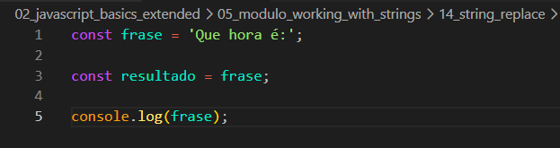
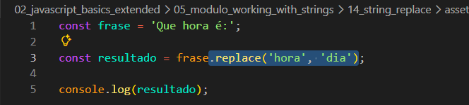
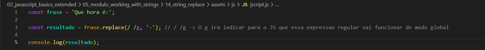

String replace
Intro
Aqui teremos o seguinte codigo como exemplo:

Aqui teremos o seguinte codigo como exemplo:

Foi criado em nosso exemplo uma variavel frase e outra resultado que recebe a primeira variavel em seguida utilizamos o console para imprimir resultado.
Se quisermos por exemplo substituir uma palavra de nossa string, para isso o JS nos oferece o metodo replace().
O metodo replace recebe dois argumentos, primeiro e a palavra/caractere que desejamos substituir, segundo parametro é a palavra/caractere que usaremos para substituir. Ficando da seguinte forma:

Tambem podemos fazer coisas como, substituir espacos por tracos. Porem ele substitui apenas uma das ocorrencias que passamos como parametro. Se quisermos substituir mais de uma ocorrencia em nossa string temos que utilizar expressao regular (RegExp). Ficando da seguinte forma:
